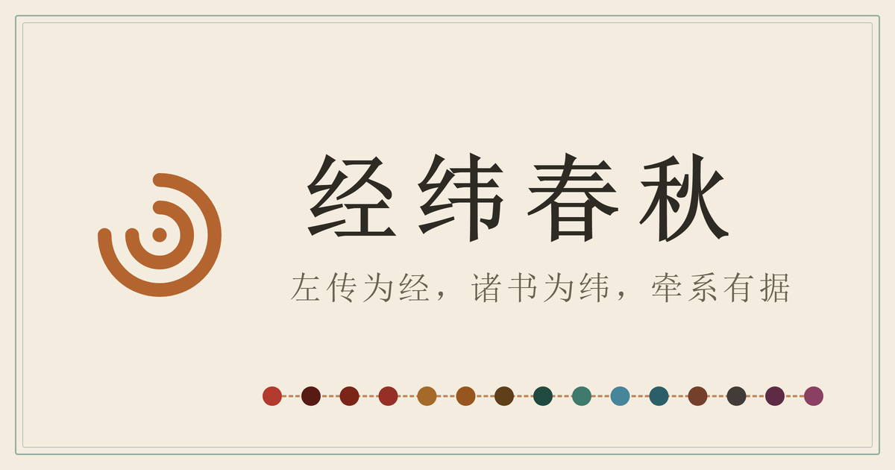

人物线 · 择一而入
点地图上的国名或色块，入其人物线；列国色块皆示意，非考据疆界。

人物时间线
人物地图
0 条事件无地望
列国底色与水系皆艺术示意，非考据疆界。
水系与地望大势参照谭其骧《中国历史地图集》通说，作平滑简化；各点坐标的逐一依据与确定性分级，见地点弹窗。
「相关」判定从严：史文未载其人亲在事发地者，一律标「相关」，不入轨迹。
淡圈为库中其他地点；点击任一处，看古名、今地与相关事件。
人物关系图谱
资料库
关于本站
初识春秋
初入春秋，可由此四线一观：
- 文姜线 —— 齐国公室之女、鲁国国母；前694年那场变故后，她每一次出行都被史官记下一笔。
- 郑庄公线 —— 《左传》开篇的雄主：克段于鄢、周郑交质、繻葛之战，皆在此线。
- 齐桓公线 —— 从内乱到霸业：自莒返国、管仲为相、北杏之会与柯之盟，终至九合诸侯。
- 晋文公线 —— 流亡十九年的归国者：自骊姬之乱出奔，遍历列国，暮年返晋即位，终成城濮之霸。
怎么读：时间线上每条事件前的小图标是事件类别（交戈为战争、鼎为会盟、双环为婚嫁……悬停可见名称），事件展开后的色签标注可靠度——high 可当骨架，medium 宜复核，low 只是线索。地图上实心点是其人亲至之地，空心点是与其相关而本人未到之处，轨迹只连亲至。
读到可疑之处，欢迎经页顶「反馈」告诉我们——指出一处错误，比转发十次更帮得上忙。
这是什么
以《左传》《国语》为经纬，缀连春秋人物的时间、行迹与关系。郑庄公、鲁隐公、文姜、齐桓公、晋文公多条人物线织成可游走的时间线、地图与关系网。条条有出处，数据表里有具体来源编号与鲁君纪年。
站名「经纬春秋」，取《左传·昭公二十八年》「经纬天地曰文」之语——以《左传》为经，国语、三传、史记、诗经、诸子为纬，纵横以织春秋之文。
数据凡例（我们的规矩）
可靠度三级：事件、地望、关系皆标 high / medium / low——high 可当骨架，medium 宜复核（多为追叙、纪年推算或异说并存），low 只作线索。亲至与相关：分"亲至"（史文明记其人身在事发地）与"相关"（事与其相关而本人不在场，如遣使代行、为其议婚）；判定从严——史无明文即标相关，地图轨迹只连亲至。
坐标确定性：古地今址按"谭其骧《中国历史地图集》通说 → 杨伯峻《春秋左传注》 → 其他历史地理著作"的次第考订，异说并存则坐标降级、注明所据；确址无考者给区域近似并标 low，个别事件径注"不落图"。后出叙事分层：《史记》等晚出文献里的戏剧情节（管仲射钩、曹沫劫盟、病榻论三竖），一律另标"后出叙事"层，与《春秋》经传的当代记事分列，不相混。
地图只是示意：列国底色与水系皆艺术化简笔，非考据疆界。
主要参考
- 《春秋左传》《国语》《史记》《诗经》（皆注篇章，外链 ctext.org）
- 杨伯峻《春秋左传注》
- 谭其骧主编《中国历史地图集》
- 韩茂莉等历史地理著作；曲阜鲁国故城、临淄齐国故城、郑韩故城等考古资料
版本与反馈
当前版本 v0.12（更名「经纬春秋」· 楚庄王线 · 重看引导归位）。
代码依 MIT 许可、数据依 CC BY 4.0 开放共享；引用数据请署名「经纬春秋 · chunqiu.timechorus.com」。
若愿支持本站长期考订，可移步支持链接（筹备中）。
- v0.12 —— 全站更名为「经纬春秋」（副题「左传为经，诸书为纬，牵系有据」）；楚庄王线上线（主角十五人，一鸣惊人、问鼎中原、邲之战）；头部时间双标（春秋纪年时段＋考订前沿「已考订至前591」）；关于页站名注脚；「重看引导」落位修复
- v0.11 —— 人物色彩改为两级国色系（齐红 · 鲁赭 · 郑青 · 晋栗 · 秦玄 · 楚紫，同国分深浅），关系全景按国着色、阵营分区；首访引导结束回到首页「选一个人」；许可声明就位（代码 MIT · 数据 CC BY 4.0）
- v0.10 —— 首访三步引导（可重看）；人物卡简介两行显示、桌面 hover 见全文、手机卡内完整；时间线事件卡加「原文 ▾」可点暗示；进人物、切视图滚动复位到顶
- v0.9 —— 首页改地图导航（点国入人、列表模式可切换）；齐僖公、武姜、祭仲三线上线，主角十二人；人物子导航升格；底图增晋与汾水
- v0.8 —— 全站一框搜索（人物/地点/事件/原文，键盘可达）；分享卡生成器（两版尺寸、扫码直达）；邮件反馈入口启用
- v0.7 —— 主导航与人物子导航分层，旧链接自动跳转；关系图并线与多重关系徽记；全站文案雅化；桌面全屏地点抽屉修复
- v0.6 —— 选人页按国分组与国别选项卡；姓名行（姓/氏/名/字）显示；晋文公全线上线
- v0.5 —— 关系图改以人为中心可游走；轨迹播放地图内字幕；导览与反馈入口
- v0.4 —— 关系结构表与图谱；数据凡例成文
- v0.3 —— 科普定位；八人物；资料库视图；移动端地图
- 更早 —— 数据管线与三屏原型
异议雅正？欢迎经 GitHub Issues 或 chunqiu@timechorus.com 见告，纠错请附出处；数据与代码俱在开源仓库。